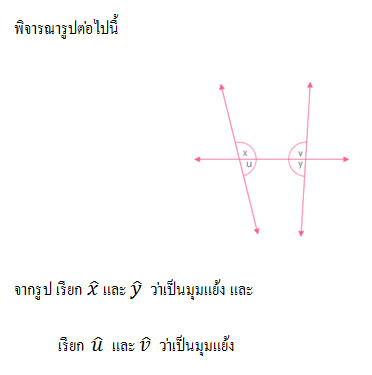
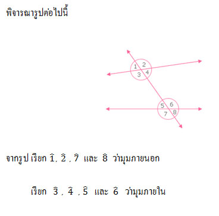
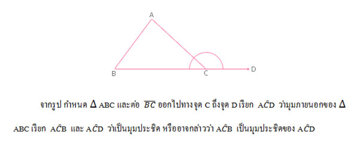

เส้นขนาน
จุดประสงค์
1. บอกบทนิยามของเส้นขนานได้
2. บอกได้ว่า ถ้าเส้นตรงสองเส้นขนานกัน แล้วระยะห่างระหว่างเส้นตรงคู่นั้นจะเท่ากันเสมอ
3. บอกได้ว่า ถ้าเส้นตรงสองเส้นมีระยะห่างระหว่างเส้นตรงเท่ากันเสมอ แล้วเส้นตรงคู่นั้นจะขนานกัน
4. บอกได้ว่า มุมคู่ใดเป็นมุมภายในที่อยู่บนข้างเดียวกันของเส้นตัด
เมื่อกําหนดให้เส้นตรงเส้นหนึ่งตัดเส้นตรงคู่หนึ่ง
5. บอกได้ว่า เมื่อเส้นตรงเส้นหนึ่งตัดเส้นตรงคู่หนึ่ง เส้นตรงคู่นั้นขนานกัน ก็ต่อเมื่อ
ขนาดของมุมภายในที่อยู่บนข้างเดียวกันของเส้นตัดรวมกันเท่ากับ 180 องศา และนําสมบัตินี้ไปใช้ได้
เส้นขนานและมุมภายใน
เส้นขนานและมุมภายใน
ในสิ่งแวดล้อมรอบตัวเรา มีตัวอย่างของสิ่งที่มีลักษณะของเส้นขนาน เช่น รางรถไฟ ราวบันได รั้ว แนวกระเบื้องปูพื้น และเส้นบรรทัดในสมุด เรามาดูกันว่าส่วนประกอบไหนเป็นเส้นขนานบ้าง
การขนานกันของเส้นตรงมีบทนิยามดังนี้
บทนิยาม
เส้นตรงสองเส้นที่อยู่บนระนาบเดียวกัน ขนานกันก็ต่อเมื่อ เส้นตรงทั้งสองเส้นนั้นไม่ตัดกัน
ระยะห่างระหว่างเส้นขนาน
ในกรณีทั่วๆไป ถ้าเส้นตรงสองเส้นขนานกัน แล้วระยะห่างระหว่างเส้นตรงคู่นั้น จะเท่ากันเสมอ และในทางกลับกัน ถ้าเส้นตรงสองเส้นมีระยะห่างระหว่างเส้นตรงเท่ากันเสมอแล้วเส้นตรงคู่นั้นจะขนานกัน
ในทางปฏิบัติ เมื่อต้องการตรวจสอบว่า เส้นตรงสองเส้นที่กำหนดให้ขนานกันหรือไม่ อาจตรวจสอบระยะห่างระหว่างเส้นตรงทั้งสองที่วัดจากจุดที่แตกต่างกันอย่างน้อยสองจุดบนเส้นตรงเส้นหนึ่งก็เพียงพอ
มุมภายในที่อยู่บนข้างเดียวกันของเส้นตัด
ผลบวกของขนาดของมุมภายในที่อยู่บนข้างเดียวกันของเส้นตัด เป็นไปตามสมบัติของเส้นขนาน ดังนี้
1. ถ้าเส้นตรงสองเส้นขนานกันและมีเส้นตัด
แล้วขนาดของมุมภายในที่อยู่บนข้างเดียวกันของเส้นตัดรวมกันเท่ากับ 180 องศา
2. ถ้าเส้นตรงเส้นหนึ่งตัดเส้นตรงคู่หนึ่ง
ทำให้ขนาดของมุมภายในที่อยู่บนข้างเดียวกันของเส้นตัดรวมกันเท่ากับ 180 องศาแล้วเส้นตรงคู่นั้นจะขนานกัน
สมบัติข้อ 1 และข้อ 2 เมื่อนำมาเขียนใหม่โดยใช้ "ก็ต่อเมื่อ" จะได้ดังนี้
เมื่อเส้นตรงเส้นหนึ่งตัดเส้นตรงคู่หนึ่ง เส้นตรงคู่นั้นขนานกัน
ก็ต่อเมื่อขนาดของมุมภายในที่อยู่บนข้างเดียวกันของเส้นตรงรวมกันเท่ากับ 180 องศา
เส้นขนานและมุมแย้ง
ทฤษฎีบท
ถ้าเส้นตรงสองเส้นขนานกันและมีเส้นตัด แล้วมุมแย้งมีขนาดเท่ากัน
ในการตรวจสอบว่า เส้นตรงสองเส้นขนานกันหรือไม่ นอกจากจะพิจารณาจากขนาดของมุมภายในที่อยู่บนข้างเดียวกันของเส้นตัดเส้นตรงทั้งสองแล้ว ยังสามารถพิจารณาจากขนาดของมุมแย้งได้ ดังทฤษฎีบทต่อไปนี้
ทฤษฎีบท
ถ้าเส้นตรงเส้นหนึ่งตัดเส้นตรงคู่หนึ่ง ทำให้มุมแย้งมีขนาดเท่ากัน แล้วเส้นตรงคู่นั้นขนานกัน
ทฤษฎีบทข้างต้นนนี้เป็นบทกลับของทฤษฎีบทที่ว่า ถ้าเส้นตรงสองเส้นขนานกันและมีเส้นตัด แล้วมุมแย้งมีขนาดเท่ากัน เมื่อนำทฤษฎีบททั้งสองนี้มาเขียนใหม่โดยใช้ ก็ต่อเมื่อ จะได้ทฤษฎีบทดังนี้
ทฤษฎีบท
เมื่อเส้นตรงเส้นหนึ่งตัดเส้นตรงคู่หนึ่ง เส้นตรงคู่นั้นขนานกัน ก็ต่อเมื่อ มุมแย้งมีขนาดเท่ากัน
เส้นขนานและมุมภายนอกกับมุมภายใน

ทฤษฎีบท
ถ้าเส้นตรงสองเส้นขนานกันและมีเส้นตัด
แล้วมุมภายนอกและมุมภายในที่อยู่ตรงข้ามบนข้างเดียวกันของเส้นตัดมีขนาดเท่ากัน
ในการตรวจสอบว่าเส้นตรงคู่หนึ่งขนานกันหรือไม่ สามารถพิจารณาจากขนาดของมุมภายนอกและมุมภายในที่อยู่ตรงข้ามบนข้างเดียวกันของเส้นตัด ดังทฤษฎีบทต่อไปนี้
ทฤษฎีบท
ถ้าเส้นตรงเส้นหนึ่งตัดเส้นตรงคู่หนึ่ง ทำให้มุมภายนอกและมุมภายในที่อยู่ตรงข้ามบนข้างเดียวกันของเส้นตัดมีขนาดเท่ากัน แล้วเส้นตรงคู่นั้นขนานกัน
ทฤษฎีบทข้างต้น เป็นบทกลับของทฤษฎีบทที่ว่า ถ้าเส้นตรงสองเส้นขนานกันและมีเส้นตัด
แล้วมุมภายนอกและมุมภายในที่อยู่ตรงข้ามบนข้างเดียวกันของเส้นตัดมีขนาดเท่ากัน
เมื่อนำทฤษฎีบททั้งสองนี้มาเขียนใหม่โดยใช้ ก็ต่อเมื่อ จะได้ทฤษฎีบทดังนี้
ทฤษฎีบท
เมื่อเส้นตรงเส้นหนึ่งตัดเส้นตรงคู่หนึ่ง เส้นตรงคู่นั้นขนานกันก็ต่อเมื่อ มุมภายนอกและมุมภายในที่อยู่ตรงข้ามบนข้างเดียวกันของเส้นตัดมีขนาดเท่ากัน
เส้นขนานและรูปสามเหลี่ยม
จากบทผ่าน ๆ มาเราเคยทราบมาแล้วว่า "ขนาดของมุมภายในทั้งสามมุมของรูปสามเหลี่ยมรวมกันเท่ากับ 180 องศา"
ข้อความนี้เป็นทฤษฎีบทที่สำคัญ ทฤษฎีบทหนึ่งทางเรขาคณิต ซึ่งสามารถพิสูจน์ได้ ดังนี้
ทฤษฎีบท
ขนาดของมุมภายในทั้งสามมุมของรูปสามเหลี่ยมรวมกันเท่ากับ 180 องศา
ทฤษฎีบทข้างต้น สามารถนำมาใช้พิสูจน์ทฤษฎีบทเกี่ยวกับขนาดของมุมภายนอกและขนาดของมุมภายในของรูปสามเหลี่ยมได้ดังต่อไปนี้

ทฤษฎีบท
ถ้าต่อด้านใดด้านหนึ่งของรูปสามเหลี่ยมออกไป มุมภายนอกที่เกิดขึ้นจะมีขนาดเท่ากับผลบวกของขนาดของมุมภายในที่ไม่ใช่มุมประชิดของมุมภายนอกนั้น
นอกจากทฤษฎีบทดังกล่าวแล้ว ยังมีการนำทฤษฎีบทเกี่ยวกับผลบวกของขนาดของมุมภายในของรูปสามเหลี่ยม ไปพิสูจน์สมบัติที่เกี่ยวกับความเท่ากันทุกประการของรูปสามเหลี่ยมดังต่อไปนี้
นักเรียนเคยศึกษามาแล้วว่า รูปสามเหลี่ยมสองรูปที่มีความสัมพันธ์กันแบบ มุม – ด้าน – มุม จะเท่ากันทุกประการ เมื่อด้านคู่ที่ยาวเท่ากันอยู่ระหว่างมุมคู่ที่มีขนาดเท่ากัน ทฤษฎีบทต่อไปนี้จะทำให้นักเรียนเห็นว่าด้านคู่ที่ยาวเท่ากันนั้น จะเป็นด้านคู่ใดก็ได้ ไม่จำเป็นต้องเป็นด้านคู่ที่อยู่ระหว่างมุมคู่ที่มีขนาดเท่ากัน แต่ต้องเป็นด้านคู่ที่อยู่ตรงข้ามกับมุมคู่ที่มีขนาดเท่ากัน
ทฤษฎีบท
ถ้ารูปสามเหลี่ยมสองรูปมีมุมที่มีขนาดเท่ากันสองคู่ และด้านคู่ที่อยู่ตรงข้ามกับมุมคู่ที่มีขนาดเท่ากัน ยาวเท่ากันหนึ่งคู่แล้วรูปสามเหลี่ยมสองรูปนั้นเท่ากันทุกประการ